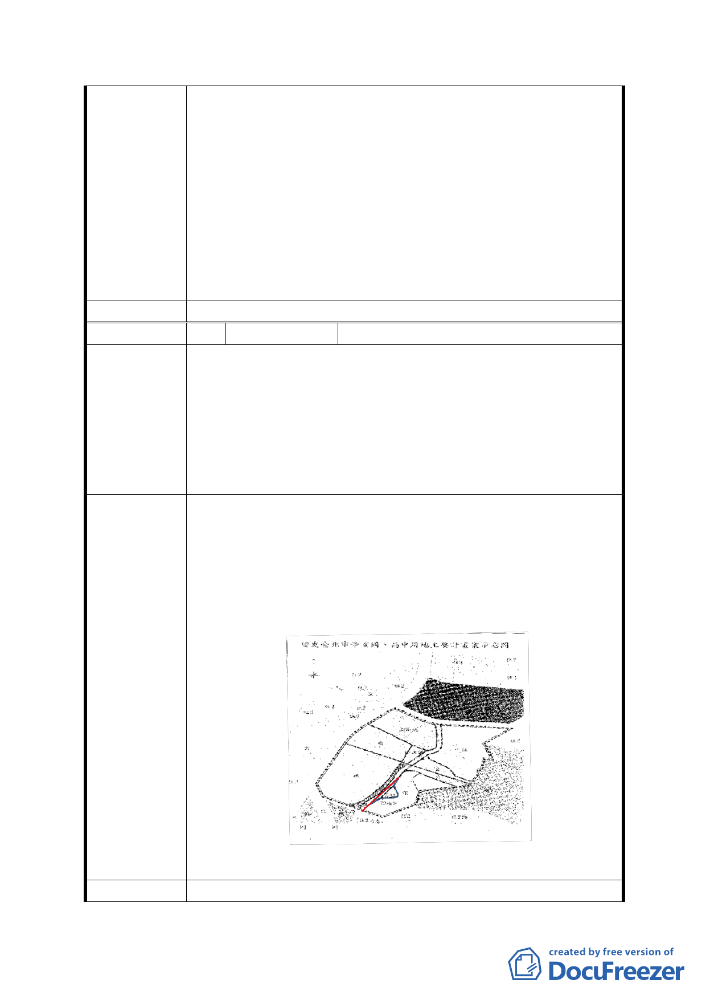

2. 本 計 畫 區 內 軍 事 營 區 因 國 防 部 評 估 後 仍 有 戰 備 使 用 需
求，且亟為重要尚無法釋出。惟本府仍持續與國防部協調
本市轄區內營區遷移及變更使用事宜，未來隨著國防任務
調整，國防部如評估本計畫區內營區已無使用需求，本府
將檢討營區之使用，並納入地區通盤檢討或辦理個案變
更。
3.有關建議劃設住宅區部分，因考量本市土地使用分區管制
自治條例有關建築基地寬、深度、前後側院留設等規定，
為避免造成畸零地，且本案劃設相關公共設施用地後，剩
餘土地坡度超過 30％，並無適合規模土地再劃設住宅區。
委員會決議 同意依「市府修正後回應說明」辦理
編 號 3 陳情人
楊仁住(97.12.15 陳情意見)
土地標示：文山區公訓段二小段73地號
1. 將學校預定地變更為水土保護區是讓民眾資產價值歸零
的做法：
陳情理由
(1) 水土保持之保護區即不得做任何使用；
(2) 連作為抵稅使用都不行。
2. 連該地號內約兩百多坪坪地，也一併視同坡地的併入保
護區，明顯草率與不合理，完全無視地主權益。
1. 現規劃為保護區部分擴編為公園景觀區，辦理徵收。
2. 水溝加蓋作為部分道路：附圖斜線部分水溝加蓋，73地
號西側之道路基線拉直(如圖紅線)，由水溝西側基線向
東算起8米做為道路(到紅線為止)，以增加可使用的平
地。到路(紅色為基線)東側平地部分(藍色曲線內)，請
變更為住3用地，以減少地主損失。
建議辦法
第五次專案小組 同編號 1
- 16 -